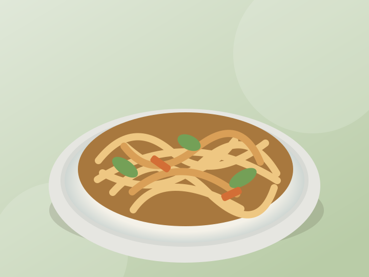

Бууз хийх уламжлалт жор
Үхрийн болон хонины махаар амтлан чимхэж, уураар жигнэдэг монгол уламжлалт үндсэн зоог...
Дэлгэрэнгүй уншихНүүр / Жорын жагсаалт
ХООЛНЫ СОЁЛ
Та дуртай хоолны ангиллаа сонгон жортой танилцаарай.
Үхрийн болон хонины махаар амтлан чимхэж, уураар жигнэдэг монгол уламжлалт үндсэн зоог...
Дэлгэрэнгүй унших
Амталсан татш махаар гуриланд битүүмжлэн халуун тосонд шаргалттал шардаг амттай хоол...
Дэлгэрэнгүй унших
Гар сунгасан гурилыг уураар жигнэж, мах болон төрөл бүрийн ногоотой холин хуурч бэлтгэнэ...
Дэлгэрэнгүй унших
Хонины махайг халуун чулуутай хамт саванд битүү чанаж болгодог нүүдэлчдийн өвөрмөц жор...
Дэлгэрэнгүй унших